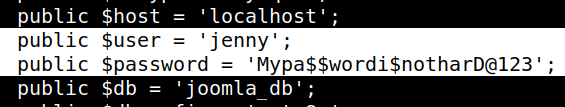

4.3 MySql credentials
You're not be able to see any user's directory at “/home”. As “Joomla” works with Mysql, you can look for the MySql Database configuration file.
1. On the “Reverse Shell” go to “joomla” directory.
$cd /var/www/html
$ls -al
$ls -al
Output:
$cd joomla
$ls -al
$ls -al
Output:
2. Show the “configuration.php” file.
$cat configuration.php
Output:

You can see the credentials.
User: jenny
Password “
Mypa$$wordi$notharD@123”